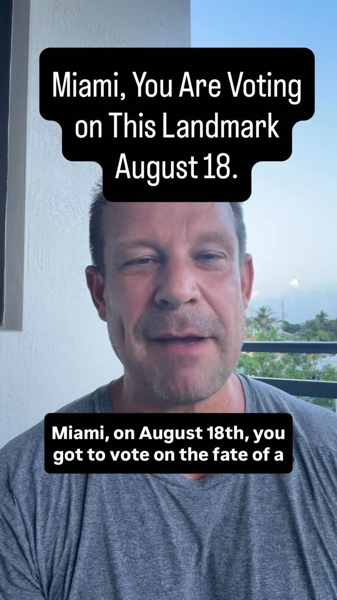
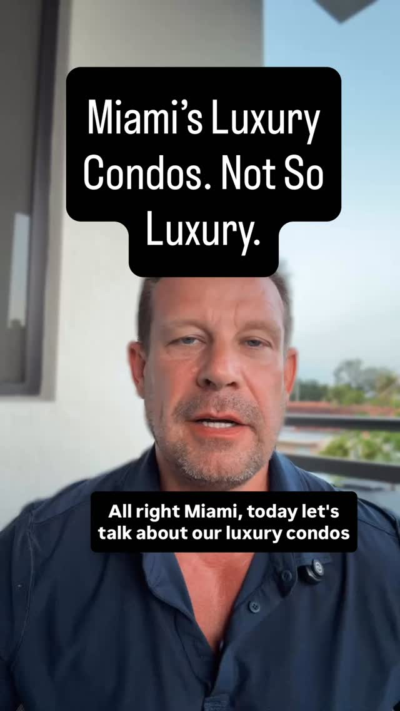
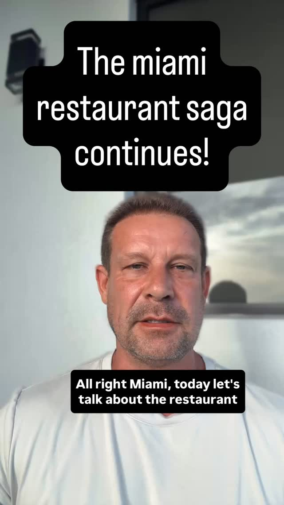
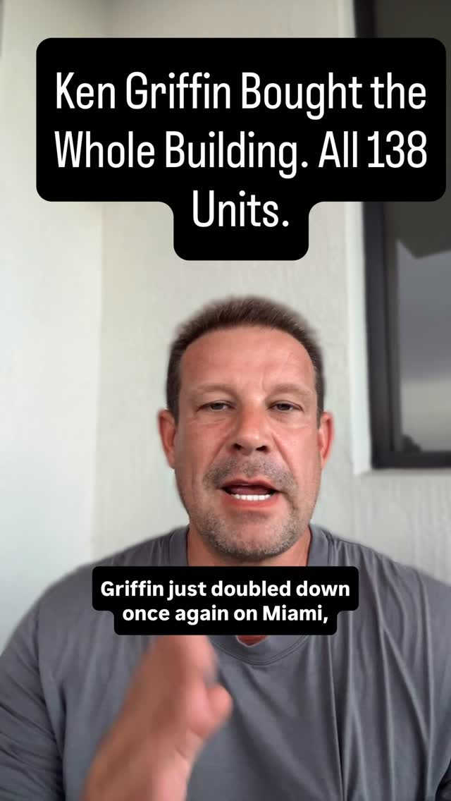
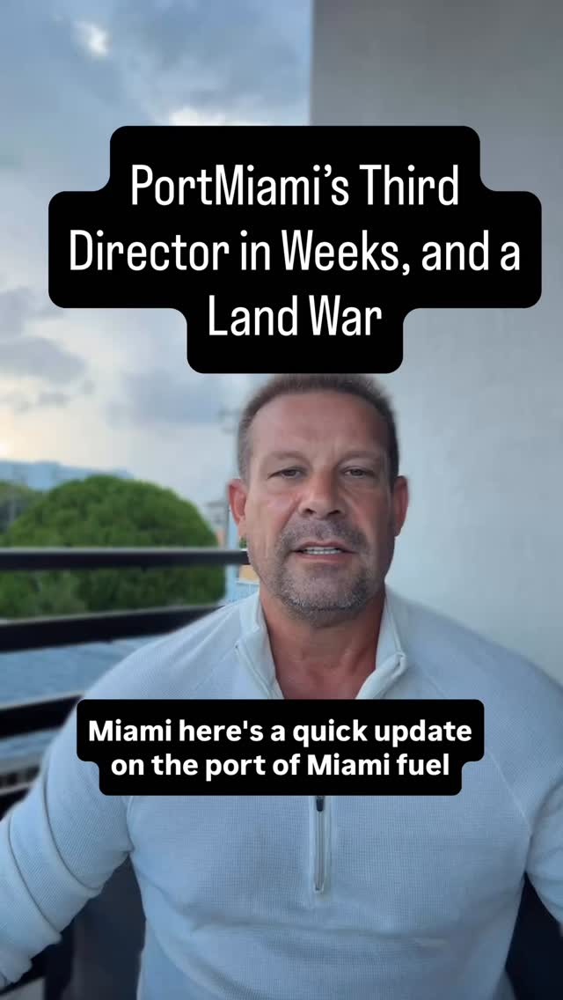
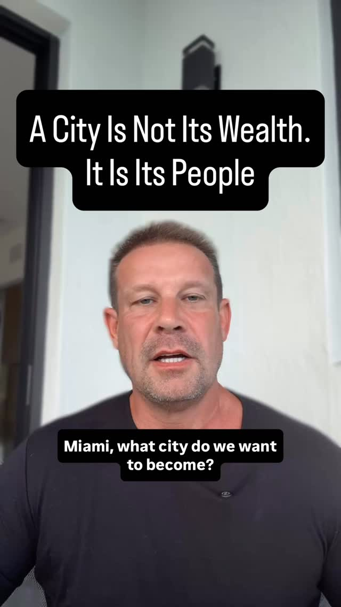

The operator investors trust in Miami.
Born in Bochum, Germany, Alexander grew up watching his great-aunt run her restaurant in Austria with grace and intention. The rhythm of a full room imprinted on him before he had words for it. Hospitality wasn’t a career choice. It was already in the room.


Social Media
Miami through an operator’s eyes.
@iamalexander.r is where two decades of market knowledge meets civic accountability. Real stories, real stakes. Covering the deals and forces shaping South Florida.
Follow @iamalexander.r
01Miami Marine Stadium
The vote over a 34-year landmark

02The ‘luxury’ condo problem
When luxury stops meaning built to last

03Miami’s dining squeeze
Why mid-tier restaurants are closing

04Ken Griffin’s Brickell
One billionaire, one city block

05The PortMiami fuel fight
Eminent domain on Fisher Island

06What city do we want to be?
Who Miami is built for